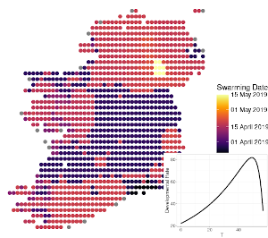
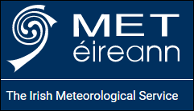
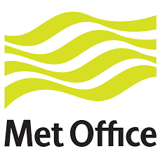
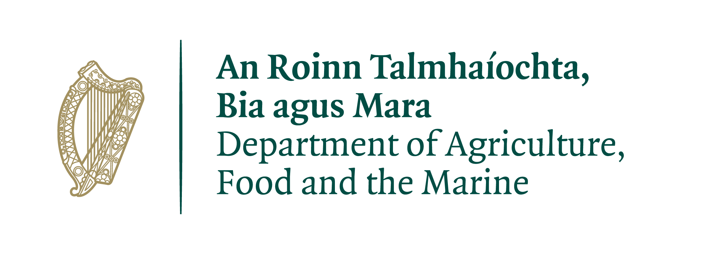

Online Pest Risk Analysis Modelling (OPRAM)
People: Paul Brett, Barry Coonan (Met Éireann), Klara Finkele (Met Éireann), Padraig Flattery (Met Éireann), Deborah Hemming (UK Met Office), Neil Kaye (UK Met Office), Tamara Hochstrasser (UCD) Conor McGee (DAFM), Jon Yearsley (UCD)
Project description

The primary goal of this project is to provide a practical visual tool that communicates scientific evidence to stakeholders involved in Ireland's plant biosecurity policy and pest/pathogen-risk management. This supports the objectives of Ireland's Plant Health and Biosecurity Strategy 2020-2025 (DAFM 2019): "To minimise the threat posed to plants by the potential introduction and establishment of plant pests and diseases".
This project addresses this goal with the following three objectives:
- To review the existing mathematical modelling approaches linking insect plant pest and pathogen outbreaks to the climate
- Develop visual tools that help support risk assessment of plant pests and pathogens, and inform their surveillance under a changing climate
- Develop a network of stakeholders that guides the development of the visualisation tools
The project is divided into the following work-packages:
- Stakeholder Consultation
- Review of available pest-risk modelling approaches
- Development and validation of a pest-risk tool for Ireland
- Development of an online pest-risk tool
Partners


Outreach & Publications
- The publically available tool (pestmaps.ie) will be launched on 7th May 2026. The tool will be called "Irish Pest Emergence Maps (IPEM)".
- DAFM webpage for the IPEM tool
- Poster for Met Eireann Research Showcase (20th May 2026)
- Yearsley, J.M., McGee, C.F., Bourke, A. (2026) A new tool for estimating insect phenology. Biodiversity Ireland, 31, 10. https://biodiversityireland.ie/app/uploads/2026/11/Biodiversity-Ireland-Issue-31-Winter-2026-WEB.pdf
- Brett, P., Hochstrasser, T., Finkele, K., Flattery, P., Coonan, B., Duffy, C., Hemming, D., Kaye, N., McGee, C., and Yearsley, J. (2025) Accounting for overwintering life-histories in an online pest risk assessment tool, EGU General Assembly 2025, Vienna, Austria, 27 Apr–2 May 2025, EGU25-17199, https://doi.org/10.5194/egusphere-egu25-17199.
Funding
This work is funded by the Department of Agriculture, Food and Marine (DAFM).
